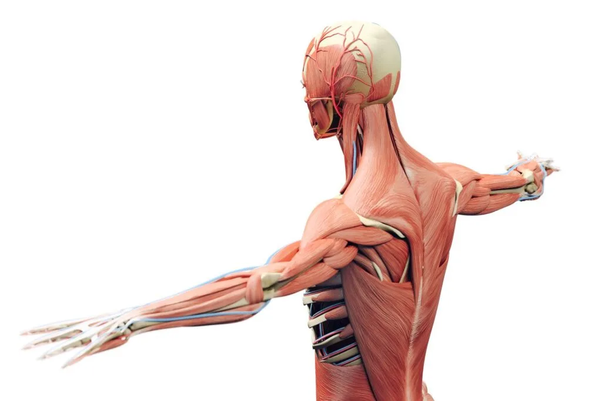
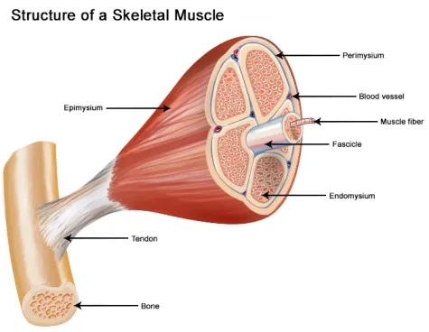
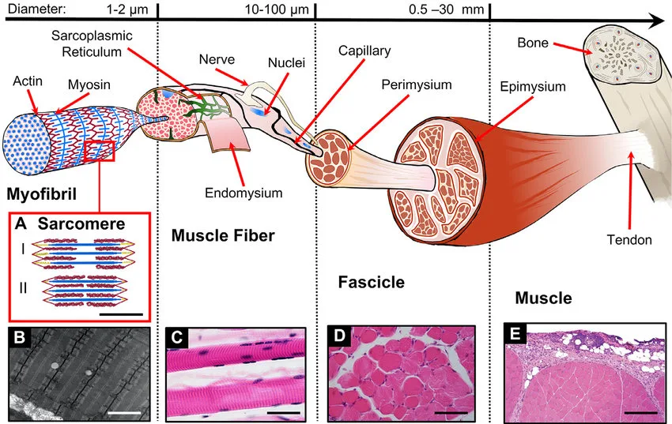
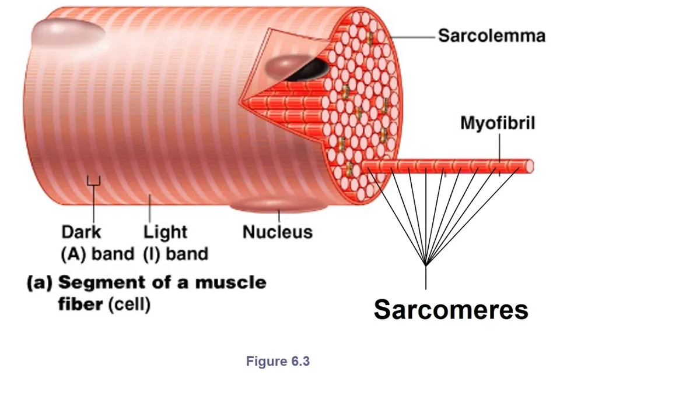
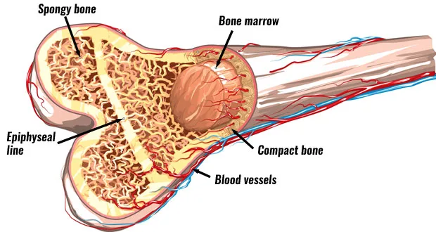
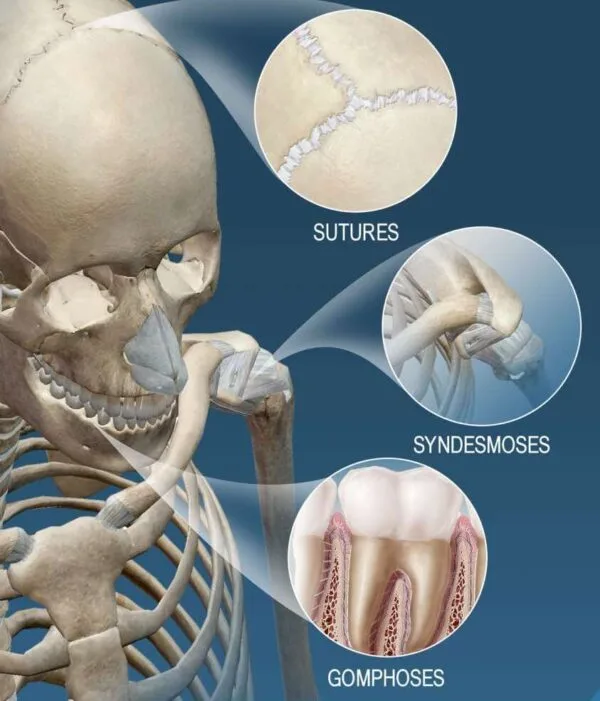
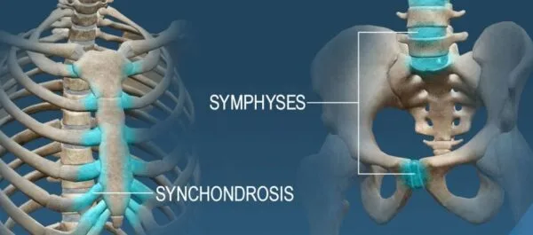
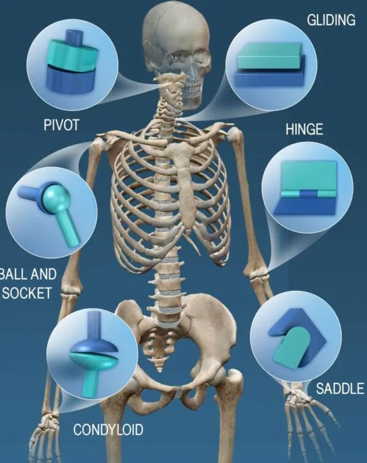

Expanded Nursing Uganda Explanation
Anatomy and Physiology of the Lymphatic System should be understood beyond a short definition. Link the concept to patient history, focused assessment, common risks, nursing priorities, documentation and evaluation of outcomes.
01 Overview
The lymphatic system is part of the circulatory system which begins with very small close ended vessels called lymphatic capillaries which is in contact with the surrounding tissues and interstitial fluid. The lymphatic system is almost a parallel system to the blood circulatory system.
- Lymph
- Lymph vessel
- Lymph nodes
- Diffuse lymphoid tissue
- Bone marrow
Lymph is a clear, watery fluid that circulates throughout the lymphatic system. It is essentially an ultrafiltrate of blood plasma that has left the capillaries and entered the interstitial spaces, eventually being collected by the lymphatic vessels. Understanding its origin and contents is key to grasping its physiological roles.
- A clear, yellowish or whitish fluid that flows through the lymphatic vessels.
- It is derived from interstitial fluid (tissue fluid) that surrounds the cells, which in turn is formed from blood plasma that filters out of blood capillaries.
- It is identical to interstitial fluid in its composition.
The composition of lymph is very similar to blood plasma, but with some key differences, primarily a lower concentration of large proteins.
- Water: The primary component, providing the solvent for all other substances.
- Electrolytes: Ions such as sodium (Na+), potassium (K+), chloride (Cl-), bicarbonate (HCO3-), etc., are present in similar concentrations to plasma.
- Nutrients: Glucose, amino acids, fatty acids, and vitamins, which have filtered out of the blood capillaries and are essential for cellular metabolism.
- Metabolic Waste Products: Urea, creatinine, and other cellular waste products.
- Proteins: Lower concentration than plasma: While most large plasma proteins are too big to easily exit blood capillaries, some do leak out into the interstitial fluid. Lymph serves to return these leaked proteins to the bloodstream.
- Plasma proteins: Albumin, globulins (including antibodies), and clotting factors are present in smaller amounts.
- Cells: Lymphocytes: These are the most abundant cells in lymph, especially after it has passed through lymph nodes. Lymphocytes are crucial for immune responses.
- Macrophages: Phagocytic cells that engulf foreign particles, cellular debris, and pathogens.
- Other immune cells: Neutrophils may be present, particularly during infection.
- Erythrocytes (Red Blood Cells): Generally absent in lymph unless there is trauma or pathology.
- Fats (Chylomicrons): After a fatty meal, specialized lymphatic vessels in the small intestine (lacteals) absorb dietary fats, which are then transported as chylomicrons in the lymph (giving it a milky appearance, especially after a meal).
- Bacteria, Viruses, Cellular Debris, Damaged Tissues: These are also transported within the lymph to the lymph nodes for filtration and immune processing.
- Antibodies: Carried by lymphocytes and dissolved in the fluid component, providing immune protection.
Lymph formation is a direct consequence of fluid exchange between blood capillaries and the interstitial spaces:
- Filtration at Capillary Ends: Due to the relatively high hydrostatic pressure within blood capillaries, a significant amount of fluid, along with dissolved substances (but not large proteins or blood cells), is forced out of the capillaries and into the interstitial spaces, becoming interstitial fluid .
- Absorption at Venule Ends: Most of this interstitial fluid (about 85-90%) is reabsorbed back into the capillaries at the venule end, where hydrostatic pressure is lower and osmotic pressure is higher.
- Lymphatic Drainage: However, about 10-15% of the interstitial fluid, along with any leaked plasma proteins and cellular debris, remains in the interstitial spaces. This fluid is collected by the blind-ended lymphatic capillaries , at which point it is officially called lymph . The unique structure of lymphatic capillaries allows large molecules to enter easily.
- Volume: Approximately 2-4 liters of lymph are formed and returned to the bloodstream each day. This represents about 1-3% of the body's total weight.
The composition of lymph directly supports its critical functions within the body:
- Fluid Balance: Return of Excess Interstitial Fluid: Lymph collects excess fluid from the interstitial spaces and returns it to the bloodstream. This prevents edema (swelling) and maintains fluid homeostasis. Without this function, interstitial fluid would accumulate rapidly, leading to death within approximately 24 hours.
- Transport of Proteins: It returns plasma proteins that have leaked out of blood capillaries into the interstitial fluid back to the circulation. This is crucial because if these proteins remained in the interstitial fluid, they would increase its osmotic pressure, drawing more fluid out of the capillaries and causing persistent edema.
- Immune Surveillance and Defense: Transport of Pathogens to Lymph Nodes: Lymph effectively "sweeps up" bacteria, viruses, cellular debris, and foreign particles from tissues and transports them to regional lymph nodes.
- Antigen Presentation: Within the lymph nodes, these pathogens and antigens are presented to lymphocytes (T and B cells) and macrophages, initiating specific immune responses.
- Distribution of Immune Cells: Lymph circulates lymphocytes and antibodies throughout the body, providing a means for immune cells to patrol tissues and quickly respond to infections.
- Fat Absorption and Transport: Transport of Dietary Lipids: In the small intestine, specialized lymphatic capillaries called lacteals absorb dietary fats (in the form of chylomicrons), cholesterol, and fat-soluble vitamins (A, D, E, K).
- Bypassing Liver (Initially): This lymphatic pathway allows these absorbed fats to bypass initial processing by the liver and enter the systemic circulation directly via the thoracic duct.
The lymphatic system begins with tiny, blind-ended capillaries that merge to form progressively larger vessels, eventually returning lymph to the bloodstream. These vessels have unique structural features that facilitate the collection and transport of lymph.
- Structure: Blind-ended: Unlike blood capillaries which form a continuous loop, lymphatic capillaries originate as blind-ended tubules in the interstitial spaces. This "closed" end is crucial for initiating lymph flow.
- Single Layer of Endothelial Cells: They are composed of a single layer of flattened endothelial cells, similar to blood capillaries.
- No Basement Membrane: A key distinguishing feature is the absence or incomplete presence of a continuous basement membrane beneath the endothelial cells. This lack of structural support makes them more permeable.
- Overlapping Endothelial Cells (Mini-Valves): The endothelial cells significantly overlap each other. These overlaps are loosely attached and form one-way flap-like mini-valves. When interstitial fluid pressure is high, these flaps open inwards, allowing fluid, proteins, bacteria, and larger particles to enter the capillary. When pressure inside the capillary is high, the flaps close, preventing lymph from leaking back into the interstitial space.
- Anchoring Filaments: Fine collagen filaments (anchoring filaments) extend from the endothelial cells into the surrounding connective tissue. These filaments anchor the capillaries to the tissue, ensuring that when tissue fluid volume increases, the capillaries are pulled open, preventing collapse and facilitating fluid entry.
- Permeability: Lymph capillaries are much more permeable than blood capillaries. This high permeability allows them to absorb not only excess interstitial fluid but also large molecules like plasma proteins (which have leaked out of blood capillaries), cell debris, bacteria, and even whole cancer cells. This ability to absorb large particles is vital for their immune and fluid balance functions.
- Distribution: Lymph capillaries are extensive networks found almost everywhere blood capillaries are present. They permeate nearly all body tissues, forming dense plexuses within the interstitial spaces.
- Exceptions: They are generally not found in certain areas, including: Brain and Spinal Cord: The central nervous system has its own fluid drainage system (cerebrospinal fluid).
- Bone Marrow: While lymphoid tissue is in bone marrow, it doesn't have lymphatic capillaries in the same way.
- Avascular tissues: Like cartilage, epidermis of the skin, and the cornea of the eye.
- Spleen: The spleen is a lymphoid organ, not a site of fluid collection from the interstitium via capillaries.
Lymph capillaries merge to form progressively larger collecting vessels, which are collectively known as lymphatics. These vessels share structural similarities with veins but also have distinct features.
- Structure: Similar to Veins, but Thinner Walls: Lymphatic vessels are structurally similar to veins, possessing three tunics (intima, media, externa), but their walls are generally much thinner and more delicate.
- More Valves: A distinguishing feature of lymphatic vessels is the presence of an even greater number of valves than in veins. These numerous one-way valves are crucial for preventing the backflow of lymph and ensuring its unidirectional flow towards the heart. The presence of these valves gives the lymphatic vessels a characteristic beaded or segmented appearance.
- Lymphangions: The segment of a lymphatic vessel between two consecutive valves is called a lymphangion. These lymphangions have smooth muscle in their walls, which contract rhythmically to propel lymph forward.
- Afferent and Efferent Vessels: Lymphatic vessels entering a lymph node are called afferent lymphatic vessels , while those leaving a lymph node are efferent lymphatic vessels .
- Types of Lymphatic Vessels (in increasing size): Lymphatic Capillaries: The starting point, blind-ended, highly permeable.
- Collecting Lymphatic Vessels: Formed by the union of capillaries, these often travel alongside arteries and veins, having numerous valves.
- Lymphatic Trunks: Formed by the convergence of collecting vessels. There are typically five major lymphatic trunks: Lumbar trunks: Drain lymph from the lower limbs, pelvic organs, and anterior abdominal wall.
- Bronchomediastinal trunks: Drain lymph from the thoracic viscera and chest wall.
- Subclavian trunks: Drain lymph from the upper limbs.
- Jugular trunks: Drain lymph from the head and neck.
- Intestinal trunk (unpaired): Drains lymph from the digestive organs.
The two largest lymphatic vessels in the body, which ultimately return lymph to the venous circulation.
- Thoracic Duct (Left Lymphatic Duct): Origin: Begins in the abdomen as a dilated sac called the cisterna chyli (located anterior to the L1 and L2 vertebrae). The cisterna chyli receives lymph from the lumbar trunks and the intestinal trunk, meaning it drains the lower limbs, pelvic and abdominal organs.
- Course: Ascends through the thoracic cavity, collecting lymph from the left broncho-mediastinal trunk, left subclavian trunk, and left jugular trunk.
- Drainage Area: Drains lymph from the entire lower half of the body (both legs, pelvis, abdomen), the left side of the thorax, the left upper limb, and the left side of the head and neck.
- Termination: Empties into the venous system at the junction of the left internal jugular vein and the left subclavian vein in the root of the neck.
- Right Lymphatic Duct: Origin: A much shorter vessel (about 1-2 cm long).
- Drainage Area: Drains lymph from the right upper limb, the right side of the thorax, and the right side of the head and neck (from the right jugular, right subclavian, and right broncho-mediastinal trunks).
- Termination: Empties into the venous system at the junction of the right internal jugular vein and the right subclavian vein in the root of the neck.
The lymphatic system is a vast, one-way network of vessels that transports lymph from peripheral tissues back to the cardiovascular system. It essentially runs parallel to the venous system, collecting fluid that cannot be reabsorbed by blood capillaries and filtering it before returning it to the blood.
Lymph circulation is a one-way street, beginning in the peripheral tissues and ending back in the bloodstream. This accessory route is vital for maintaining fluid balance, transporting absorbed nutrients, and facilitating immune responses.
- Interstitial Fluid: Fluid (plasma minus large proteins) filters out of blood capillaries into the interstitial spaces, becoming interstitial fluid. This fluid surrounds tissue cells.
- Lymphatic Capillaries: The blind-ended, highly permeable lymphatic capillaries collect excess interstitial fluid, leaked proteins, cellular debris, and pathogens from the interstitial spaces. Once inside these capillaries, the fluid is called lymph .
- Collecting Lymphatic Vessels: Lymphatic capillaries merge to form larger collecting vessels. These vessels have numerous one-way valves, giving them a beaded appearance, and often travel alongside blood vessels.
- Lymph Nodes: Lymphatic vessels typically pass through one or more (often 8-10) lymph nodes. Lymph flows into a node via afferent lymphatic vessels , is filtered as it passes through the node, and then exits via efferent lymphatic vessels . This filtration process allows immune cells within the node to monitor the lymph for foreign substances.
- Lymphatic Trunks: Efferent vessels eventually converge to form larger lymphatic trunks. There are several major trunks throughout the body (e.g., lumbar, intestinal, broncho-mediastinal, subclavian, jugular).
- Lymphatic Ducts: The lymphatic trunks drain into one of two large lymphatic ducts: Thoracic Duct: Receives lymph from the cisterna chyli (which collects lymph from the lumbar trunks and intestinal trunk).
- Also receives lymph from the left jugular, left subclavian, and left broncho-mediastinal trunks.
- Drains: The entire lower body, left upper limb, left side of the thorax, and left side of the head and neck.
- Terminates: Empties into the venous circulation at the junction of the left internal jugular vein and the left subclavian vein .
- Right Lymphatic Duct: Receives lymph from the right jugular, right subclavian, and right broncho-mediastinal trunks.
- Drains: The right upper limb, right side of the thorax, and right side of the head and neck.
- Terminates: Empties into the venous circulation at the junction of the right internal jugular vein and the right subclavian vein .
- Subclavian Veins: Once lymph enters the subclavian veins, it mixes with blood plasma and becomes part of the general venous circulation, eventually returning to the heart.
Unlike the cardiovascular system, which has the heart as a central pump, the lymphatic system relies on extrinsic and intrinsic mechanisms to propel lymph against gravity and low pressure. These mechanisms collectively form what is sometimes called the "lymphatic pump."
- Skeletal Muscle Pump: Mechanism: Contraction and relaxation of skeletal muscles surrounding lymphatic vessels compress the vessels. This compression pushes lymph forward through the one-way valves.
- Importance: This is a major driving force, especially in the limbs. Increased physical activity (exercise) significantly enhances lymph flow by increasing muscle contractions. Conversely, prolonged inactivity leads to sluggish lymph flow.
- Respiratory Pump (Pressure Changes during Breathing): Mechanism: During inhalation, the diaphragm descends, increasing intra-abdominal pressure and decreasing intrathoracic pressure. This pressure gradient compresses abdominal lymphatic vessels (including the cisterna chyli) and draws lymph into the thoracic duct, which is in the lower-pressure thoracic cavity. During exhalation, the reverse occurs, helping to maintain flow.
- Rhythmic Contraction of Smooth Muscle in Lymphatic Vessels (Intrinsic Lymphatic Pump): Mechanism: The walls of larger lymphatic vessels (collecting vessels, trunks, ducts) contain smooth muscle cells, particularly in the segments between valves (lymphangions). These smooth muscles undergo slow, rhythmic, spontaneous contractions.
- Importance: This intrinsic peristaltic-like action helps to actively propel lymph forward, especially when other external pumps are less active.
- Pulsations of Adjacent Arteries: Mechanism: Lymphatic vessels often run in close proximity to arteries. The pulsations (throbbing) of these arteries, due to each heartbeat, can compress the lymphatic vessels and gently massage lymph along.
- One-Way Valves: Mechanism: These numerous valves are crucial structural components within lymphatic vessels that ensure unidirectional flow. They prevent lymph from flowing backward due to gravity or pressure fluctuations.
- Compression of Tissues by External Objects: Mechanism: External compression, such as massage, compression garments, or simply leaning on an object, can also temporarily increase pressure on lymphatic vessels and aid lymph flow.
- Hydrostatic Pressure in Interstitial Fluid: Mechanism: The initial entry of interstitial fluid into lymphatic capillaries is driven by a pressure gradient. When interstitial fluid pressure is higher than the pressure inside the lymphatic capillary, the mini-valves open, allowing fluid to enter.
- Essential for Life: The continuous return of fluid and proteins from the interstitial spaces to the blood prevents fatal edema and hypovolemia (low blood volume).
- Immune System Function: It allows immune cells and antigens to be circulated and processed in lymph nodes, initiating vital immune responses.
- Nutrient Transport: Especially important for the absorption and transport of dietary fats.
Lymph nodes are small, encapsulated organs that are strategically distributed throughout the body along the lymphatic vessels. They serve as primary sites for immune surveillance.
Lymph nodes are typically oval or bean-shaped, ranging in size from 1 mm to 25 mm (about 1 inch) in diameter.
- Capsule: Each lymph node is enclosed by a dense fibrous capsule made of connective tissue.
- Trabeculae: Extensions of the capsule, called trabeculae , extend inwards into the interior of the node, dividing it into compartments and providing structural support.
- Cortex and Medulla: Cortex (Outer Region): The outer part of the lymph node. It contains: Lymphoid Follicles (Nodules): Spherical clusters of lymphocytes.
- Primary Follicles: Densely packed with small, inactive B lymphocytes.
- Secondary Follicles: Develop in response to an antigen. They have a lighter-staining central area called a germinal center , which contains rapidly proliferating B cells, plasma cells (antibody-producing cells), and follicular dendritic cells.
- Paracortex (Deep Cortex): The region between the follicles and the medulla. This area is rich in T lymphocytes and high endothelial venules (HEVs), through which lymphocytes can enter the node from the bloodstream. Dendritic cells, which present antigens to T cells, are also abundant here.
- Medulla (Inner Region): The central part of the lymph node. It consists of: Medullary Cords: Branching cords of lymphatic tissue that extend inward from the cortex. They contain B lymphocytes, plasma cells, and macrophages.
- Medullary Sinuses: Large lymphatic capillaries that separate the medullary cords. Lymph flows through these sinuses.
- Lymphatic Sinuses (Channels for Lymph Flow): These are a network of irregular channels lined by reticular cells and macrophages, forming a labyrinth through which lymph percolates.
- Subcapsular Sinus (Marginal Sinus): Located immediately beneath the capsule, where afferent lymphatic vessels first empty.
- Cortical Sinuses (Trabecular Sinuses): Extend from the subcapsular sinus, along the trabeculae.
- Medullary Sinuses: Located in the medulla.
- Flow Path: Lymph enters the subcapsular sinus, flows through cortical and medullary sinuses, and eventually collects in the efferent lymphatic vessels.
- Blood Supply: Lymph nodes receive arterial blood and drain venous blood. High Endothelial Venules (HEVs) in the paracortex are particularly important, allowing lymphocytes to enter the node directly from the blood circulation.
- Afferent and Efferent Lymphatic Vessels: Afferent Lymphatic Vessels: Several (typically 4-5) afferent vessels pierce the convex surface of the capsule, bringing lymph into the node. These vessels have valves that direct lymph inward.
- Efferent Lymphatic Vessels: Fewer (typically 1-2) efferent vessels emerge from the hilum (the indented region) of the lymph node, carrying filtered lymph out of the node. These also have valves to prevent backflow.
Lymph nodes are found throughout the body, often clustered in strategic locations where they can effectively filter lymph from large regions. They are typically arranged in deep and superficial groups. Key large groups include:
- Cervical Lymph Nodes: Location: In the neck, both superficial (along the sternocleidomastoid muscle) and deep (around the internal jugular vein).
- Drainage: Head and neck.
- Clinical Significance: Often swell during throat infections, colds, and ear infections.
- Axillary Lymph Nodes: Location: In the armpits (axilla).
- Drainage: Upper limbs, pectoral region, and the mammary glands.
- Clinical Significance: Crucial in the staging of breast cancer, as cancer cells often metastasize via lymphatic drainage to these nodes.
- Inguinal Lymph Nodes: Location: In the groin region.
- Drainage: Lower limbs, external genitalia, and superficial abdominal wall.
- Clinical Significance: May swell with infections or cancers of the lower extremities or pelvic area.
- Popliteal Lymph Nodes: Location: Behind the knee.
- Drainage: Superficial leg and foot.
- Thoracic Lymph Nodes: Location: Within the mediastinum and around the hila of the lungs (hilar nodes), along the aorta (aortic nodes), and sternum (sternal nodes).
- Drainage: Thoracic organs (lungs, heart, esophagus, mediastinum).
- Clinical Significance: Involved in lung infections (e.g., tuberculosis) and lung cancer.
- Abdominal and Pelvic Lymph Nodes: Location: Along the aorta (e.g., para-aortic nodes), iliac vessels, and within the mesentery of the intestines (e.g., mesenteric nodes).
- Drainage: Abdominal and pelvic organs (e.g., gastrointestinal tract, kidneys, reproductive organs).
- Clinical Significance: Involved in cancers of the digestive system and urogenital system.
- Cisterna Chyli: While not a true lymph node, this is a dilated sac that collects lymph from the lumbar and intestinal trunks, located in front of L1 & L2 vertebrae.
Lymph nodes perform two primary, interconnected functions:
- Filtration of Lymph: Mechanism: As lymph slowly flows through the intricate network of sinuses within the node, macrophages and reticular cells lining these sinuses phagocytose (engulf) debris, foreign particles, bacteria, viruses, dead cells, and cancer cells.
- Importance: This cleansing action prevents harmful substances from reaching the bloodstream, effectively "purifying" the lymph before it is returned to the circulation. Lymph typically passes through around 8-10 nodes before returning to the blood, ensuring thorough filtration.
- Immune Surveillance and Activation: Antigen Presentation: Lymph nodes are packed with lymphocytes (T cells and B cells) and antigen-presenting cells (APCs) like dendritic cells and macrophages. When pathogens or their antigens are carried into the node via lymph, APCs capture and present these antigens to lymphocytes.
- Lymphocyte Proliferation: This antigen presentation triggers the activation and rapid proliferation (clonal expansion) of specific T and B lymphocytes that recognize the antigen.
- Antibody Production: Activated B cells transform into plasma cells, which produce and secrete large quantities of antibodies into the lymph and eventually into the blood, targeting the invading pathogens.
- Cell-Mediated Immunity: Activated T cells differentiate into various effector T cells (e.g., cytotoxic T cells that directly kill infected cells) and memory T cells.
- Importance: Lymph nodes are the key sites where adaptive immune responses are initiated and amplified, leading to the eradication of infections and the development of immunological memory.
Lymphoid tissue is a specialized connective tissue containing large numbers of lymphocytes and macrophages, forming the structural and functional basis of the immune system. It can be categorized into primary lymphoid organs (where lymphocytes mature) and secondary lymphoid organs/tissues (where lymphocytes become activated). For this objective, we'll focus on the more "diffuse" or "aggregated" lymphoid tissues.
This refers to collections of lymphocytes and macrophages that are loosely scattered within the connective tissue of mucous membranes, particularly those lining the gastrointestinal, respiratory, urinary, and reproductive tracts. It is the most common form of lymphoid tissue and lacks a distinct capsule. Its primary role is to protect these open passages from invading pathogens.
When lymphoid tissue is organized into dense, spherical clusters, it forms lymphoid follicles or nodules. These are typically unencapsulated. Many of these are part of Mucosa-Associated Lymphoid Tissue (MALT) , which collectively guards the body's mucous membranes.
- Tonsils: Description: Ring-like arrangements of lymphoid tissue located in the pharynx (throat) region, forming a protective circle at the entrance to the digestive and respiratory tracts. They are covered by epithelium that invaginates to form blind-ended crypts, which trap bacteria and particulate matter, allowing immune cells to destroy them.
- Types: Palatine Tonsils: Located at the posterior end of the oral cavity (the "tonsils" commonly removed). They are the largest and most often infected.
- Lingual Tonsil: Located at the base of the tongue.
- Pharyngeal Tonsil (Adenoids): Located on the posterior wall of the nasopharynx. When enlarged, they can obstruct breathing and are often referred to as "adenoids."
- Significance: Act as the first line of defense against inhaled and ingested pathogens, initiating immune responses locally.
- Aggregated Lymphoid Follicles (Peyer's Patches): Description: Large, oval or elongated clusters of lymphoid follicles found in the wall of the distal part of the small intestine (ileum) . They are strategically positioned to monitor the bacterial flora of the gut and prevent the growth of pathogenic bacteria.
- Significance: Crucial for immune surveillance in the intestine. They contain B cells that can differentiate into IgA-producing plasma cells, which secrete IgA antibodies into the gut lumen to neutralize pathogens. They also contain specialized M (microfold) cells that sample antigens from the gut lumen and present them to underlying immune cells.
- Appendix (Vermiform Appendix): Description: A small, finger-like projection extending from the large intestine (cecum). Its wall contains a high concentration of lymphoid follicles.
- Significance: Thought to be a lymphoid organ that plays a role in gut immunity, possibly serving as a "safe house" for beneficial gut bacteria or a site for immune cell maturation. Its exact functions are still being fully elucidated, but its lymphoid tissue indicates an immune role.
- Bone Marrow: Not just a site for hematopoiesis (blood cell formation), but also a primary lymphoid organ where B lymphocytes mature and where all lymphocytes originate.
- Spleen: The largest lymphoid organ, it contains vast amounts of lymphoid tissue (white pulp) for filtering blood and initiating immune responses.
- Thymus Gland: A primary lymphoid organ where T lymphocytes mature and are "educated."
- Liver and Lungs: While not considered primary lymphoid organs, they contain significant populations of immune cells (e.g., Kupffer cells in the liver, alveolar macrophages in the lungs) and diffuse lymphoid tissue that contribute to local immunity.
- Pathogen Surveillance: They constantly monitor for pathogens entering through various portals of entry (e.g., respiratory, digestive).
- Immune Response Initiation: They provide sites where lymphocytes can encounter antigens, proliferate, and differentiate into effector cells (e.g., plasma cells, cytotoxic T cells) to combat infections.
- Immunological Memory: They contribute to the development of immunological memory, allowing for a faster and stronger response upon subsequent exposure to the same pathogen.
The spleen is a soft, blood-rich organ that is unique among lymphoid organs because it filters blood, not lymph. Its complex internal structure allows it to perform diverse immunological and hematological functions.
- Location: The spleen is located in the upper left quadrant of the abdominal cavity , nestled inferior to the diaphragm, posterior to the stomach, and superior to the left kidney.
- It is typically between the 9th and 11th ribs. Its posterior surface is related to the diaphragm, and its medial surface to the stomach, left kidney, and tail of the pancreas.
- It is intraperitoneal, meaning it is almost entirely surrounded by peritoneum.
- Size and Shape: Typically about 12 cm (5 inches) long, 7 cm (3 inches) wide, and 3-4 cm (1.5 inches) thick. It weighs about 150-200 grams in adults.
- It is oval-shaped, dark red-purple, and has a soft, friable (easily torn) consistency.
- Capsule and Trabeculae: The spleen is enclosed by a thin, but relatively tough, fibrous capsule made of dense irregular connective tissue. This capsule also contains some smooth muscle cells, which can contract to help expel blood.
- Trabeculae extend inward from the capsule, dividing the spleen into compartments and providing structural support. They also carry blood vessels into the splenic pulp.
- Hilum: The medial surface of the spleen has an indentation called the hilum , where the splenic artery (bringing blood to the spleen) and splenic vein (draining blood from the spleen) enter and exit, respectively. Lymphatic vessels and nerves also pass through the hilum.
- Splenic Pulp: The internal substance of the spleen is called the splenic pulp , which is highly vascularized and consists of two main components: White Pulp: Description: Consists of spherical clusters of lymphoid tissue, primarily lymphocytes (T and B cells) surrounding central arteries. It appears as "white" spots on a gross section.
- Composition: Periarteriolar Lymphoid Sheath (PALS): Concentric rings of T lymphocytes surrounding a central arteriole.
- Splenic Follicles: Nodules of B lymphocytes, often with germinal centers, located within the PALS.
- Function: Involved in immune responses. It is the site where immunological reactions to blood-borne antigens occur.
- Red Pulp: Description: Surrounds the white pulp and makes up the bulk of the spleen. It is rich in blood, giving it a deep red color.
- Composition: Splenic Cords (Cords of Billroth): Networks of reticular connective tissue containing macrophages, lymphocytes, plasma cells, and red blood cells.
- Splenic Sinuses (Sinusoids): Wide, leaky capillaries that separate the splenic cords. These sinusoids have a discontinuous basement membrane, allowing blood cells to easily move between the cords and sinuses.
- Function: Primarily involved in filtering blood, removing old/damaged red blood cells and platelets, and storing blood.
- Blood Filtration and Cleansing (Hematological Functions): Removal of Old/Damaged Red Blood Cells: As red blood cells age (typically after 120 days), they become less flexible and are unable to navigate the narrow splenic sinusoids and cords. Macrophages in the red pulp recognize and phagocytose these senescent or damaged red blood cells, breaking down hemoglobin and recycling iron. This is often called the "graveyard of red blood cells."
- Removal of Platelets: Similarly, old or damaged platelets are removed from circulation by macrophages in the spleen.
- Removal of Other Blood-borne Debris: Phagocytic cells in the spleen also remove cellular debris, microorganisms, and other particulate matter from the blood.
- Immune Surveillance and Response (Immunological Functions): Immune Response to Blood-borne Pathogens: The white pulp of the spleen is analogous to a very large lymph node, but it filters blood instead of lymph. It provides a site for lymphocytes (T and B cells) and antigen-presenting cells to encounter blood-borne antigens (e.g., bacteria, viruses) and initiate specific immune responses.
- Antigen Presentation: Dendritic cells and macrophages in the white pulp present antigens to lymphocytes, leading to their activation.
- Lymphocyte Proliferation: Activated B and T cells proliferate in the white pulp, generating an army of immune cells.
- Antibody Production: Plasma cells generated in the spleen produce antibodies that are released into the bloodstream to target pathogens.
- Blood Storage: Red Blood Cells and Platelets: The red pulp acts as a reservoir for blood. In some animals, the spleen can contract to release a significant volume of blood into circulation during hemorrhage or increased activity (though this function is less pronounced in humans). It also stores a considerable amount of platelets (up to 30-40% of the body's total platelet count).
- Monocytes: The spleen serves as a large reservoir for monocytes, which can be rapidly deployed to sites of tissue injury or infection.
- Hematopoiesis (Fetal Life): Fetal Blood Cell Production: During fetal development, the spleen is an important site of hematopoiesis (blood cell formation).
- Adult Life (Pathological Conditions): In adults, the spleen generally does not produce red or white blood cells under normal conditions. However, in certain pathological conditions (e.g., severe anemia, myelofibrosis), it can resume its hematopoietic function (extramedullary hematopoiesis).
- Splenomegaly: Enlargement of the spleen, often indicative of an underlying condition such as infection (e.g., mononucleosis), liver disease, or certain blood cancers.
- Splenectomy: Surgical removal of the spleen. While individuals can live without a spleen, they become more susceptible to certain bacterial infections (particularly encapsulated bacteria like Streptococcus pneumoniae , Haemophilus influenzae type B, and Neisseria meningitidis ) because the spleen is crucial for filtering these bacteria from the blood and initiating an early immune response.
Bone marrow is a primary lymphoid organ, alongside the thymus, meaning it is where lymphocytes originate and mature. It is a highly vascular, soft, spongy tissue found in the medullary cavities of bones.
- Location: Found within the spongy (cancellous) bone and medullary cavities of long bones.
- In adults, red bone marrow (the active, hematopoietic type) is primarily found in the flat bones (sternum, ribs, vertebrae, pelvic bones, skull) and the epiphyses (ends) of long bones (femur, humerus).
- Yellow bone marrow (composed mostly of fat cells) replaces red marrow in the shafts of long bones during adolescence, though it can convert back to red marrow if needed (e.g., severe hemorrhage).
- Composition: The primary cellular components are hematopoietic stem cells (HSCs), which are multipotent cells capable of differentiating into all types of blood cells, including immune cells.
- It also contains stromal cells (fibroblasts, adipocytes, endothelial cells, macrophages) that create the microenvironment (bone marrow niche) necessary for hematopoiesis and lymphocyte development.
Bone marrow performs two fundamental and indispensable roles:
- Site of Hematopoiesis (Origin of All Immune Cells): All Lymphocytes and Other Leukocytes Originate Here: Hematopoietic stem cells (HSCs) in the red bone marrow are the progenitors for all blood cells, including: Lymphoid Stem Cells: These differentiate into B lymphocytes, T lymphocytes (though T cells leave the bone marrow to mature in the thymus), and Natural Killer (NK) cells.
- Myeloid Stem Cells: These differentiate into all other white blood cells (leukocytes) that are crucial for innate immunity (Neutrophils, Eosinophils, Basophils, Monocytes) and Erythrocytes/Platelets.
- Continuous Production: The bone marrow continuously produces billions of new blood cells daily, ensuring a constant supply of immune cells to maintain the body's defense.
- Site of B Lymphocyte Maturation: Primary Lymphoid Organ for B Cells: Unlike T cells, B lymphocytes undergo their entire maturation process (from lymphoid stem cell to immunocompetent, naive B cell) within the bone marrow.
- Development and Selection: During this process, B cells acquire their unique B cell receptors (BCRs) and undergo rigorous selection to ensure that they are functional and, crucially, self-tolerant (i.e., do not react against the body's own tissues).
- Release of Naive B Cells: Once mature, naive (antigen-inexperienced) B cells are released from the bone marrow into the bloodstream and lymphatic circulation, ready to encounter antigens in secondary lymphoid organs (like lymph nodes or the spleen).
- Site of Long-Lived Plasma Cells and Memory B Cells: After an immune response, activated B cells can differentiate into long-lived plasma cells and memory B cells. A significant proportion of these long-lived cells migrate back to the bone marrow, where they reside for years or even decades.
- Long-Lived Plasma Cells: Continuously produce antibodies, providing long-term humoral immunity.
- Memory B Cells: Provide a rapid and robust secondary immune response upon re-exposure to the same antigen. The bone marrow acts as a crucial niche for the survival of these essential memory cells.
- Bone Marrow Transplants: Used to treat various hematological disorders and cancers (e.g., leukemia, lymphoma) by replacing diseased or damaged bone marrow with healthy hematopoietic stem cells.
- Immune Deficiencies: Dysfunction of the bone marrow can lead to severe immune deficiencies due to a lack of mature lymphocytes and other immune cells.
- Autoimmune Diseases: Problems with B cell selection in the bone marrow can contribute to autoimmune diseases where B cells produce antibodies against self-antigens.
The thymus is a primary lymphoid organ because it is the site of T-cell maturation and education. It is particularly active during childhood and adolescence, undergoing a process of involution (shrinkage) after puberty.
- Location: Located in the superior mediastinum , posterior to the sternum and anterior to the great vessels of the heart and the trachea.
- It partially overlies the superior part of the heart and its great vessels.
- Size and Development: It is relatively large in infants and children, continuing to grow until puberty.
- After puberty, it begins to atrophy (shrink), a process called involution , where much of its lymphoid tissue is replaced by adipose (fat) tissue. While it becomes smaller, it remains functionally active throughout life, albeit at a reduced capacity.
- Gross Anatomy: Typically bilobed (two lobes), connected by an isthmus.
- Enclosed by a fibrous capsule .
- The capsule sends trabeculae (septa) into the interior, dividing the lobes into numerous smaller compartments called lobules .
- Microscopic Anatomy (within each lobule): Each lobule has two distinct regions: Cortex (Outer Region): Composition: Densely packed with rapidly dividing T lymphocytes (thymocytes), macrophages, and specialized epithelial cells called thymic epithelial cells (TECs) .
- Function: This is the primary site for the initial stages of T-cell maturation and the first round of T-cell selection ( positive selection ).
02 Nursing Uganda Clinical Lens
Use Anatomy and Physiology of the Lymphatic System as a practical nursing topic, not only a memorized definition. Start with normal structure and function, then connect it to assessment findings and disease.
- What to understand first: define anatomy and physiology of the lymphatic system, identify the normal or expected pattern, then explain what changes when the patient is unwell.
- Why it matters in care: the nurse must recognize risk early, explain findings clearly, document accurately and know when to escalate.
- How to revise it: connect each point to assessment, nursing diagnosis or care problem, intervention, rationale and evaluation.
03 Assessment Guide
- Relevant inspection, palpation, movement, auscultation, vital signs or neurological checks.
- Normal findings, abnormal findings and what each abnormality may indicate.
- Patient history, risk factors and how the body system affects other systems.
04 Nursing Priorities, Rationales and Outcomes
- Use anatomy to explain symptoms and guide focused assessment.
- Recognize findings that need urgent escalation.
- Teach the patient using simple body-system language.
The rationale for these priorities is patient safety: nursing actions should prevent deterioration, reduce discomfort, support recovery and create clear evidence for the next caregiver.
- Expected outcome: The learner can explain normal function, identify abnormal signs and connect them to nursing action.
05 Patient Teaching and Revision Check
- Explain anatomy and physiology of the lymphatic system in simple language the patient or caregiver can repeat back.
- Teach warning signs, medicine or follow-up instructions, hygiene or lifestyle points where relevant.
- For exams, prepare a short answer using: definition, causes or risk factors, signs, assessment, management, complications and prevention.
- For ward practice, document baseline findings, actions taken, patient response and the plan for review.
Illustrations and Diagrams (10)








2 more diagrams available, open the lesson for full illustrations.
Related Video Lectures
Watch nursing lecture videos on YouTube for this topic. Opens in a new tab.
Watch on YouTubeExternal link: YouTube may use its own cookies and terms. Nursing Uganda is not affiliated with YouTube.